Hướng dẫn dùng Liam Training Log
Sổ tập gym: chạy theo chương trình có sẵn, ghi set/rep/kg, đếm giờ nghỉ, theo dõi tiến bộ, cân nặng và huy hiệu. Đọc lướt theo mục, ảnh là màn hình thật của app.
1Cài lên điện thoại
App là web nhưng cài được như app thật, mở toàn màn hình và chạy được khi mất mạng.
- iPhone: mở trang bằng Safari → nút Chia sẻ → Thêm vào MH chính.
- Android: mở bằng Chrome → menu ⋮ → Cài đặt ứng dụng / Thêm vào màn hình chính.
2Chọn chương trình
Lần đầu mở app trên một máy mới, app hỏi 4 câu ngắn (mục tiêu, số buổi/tuần, kinh nghiệm, tập ở đâu) rồi gợi ý 1–2 chương trình hợp nhất. Chỉ là gợi ý, chọn chương trình nào cũng được, và bảng hỏi chỉ hiện một lần.
Chọn một chương trình (Min-Max, Legacy, PPL…). Sau này đổi bằng cách bấm tên chương trình ở góc trên trái, hoặc tab Chương trình.
- Mỗi chương trình có số tuần, số buổi, ảnh bìa riêng.
- Đổi chương trình không mất dữ liệu: mỗi chương trình lưu tiến độ riêng.
- Nút ⌂ Tập ở nhà (chương trình nào có): tự đổi bài máy / cáp / ghế sang tạ đơn hoặc không dụng cụ. Bấm lần nữa để về bài gốc.
3Trang Hôm nay
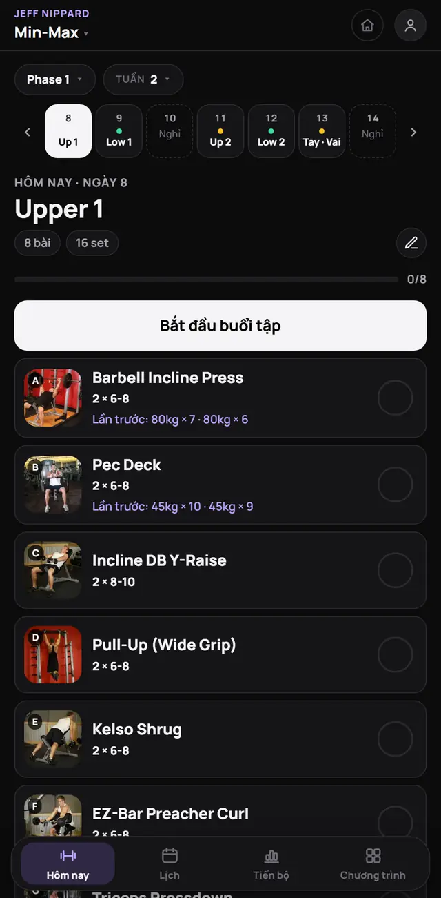
- Phase / Tuần: chọn nhanh giai đoạn và tuần. Dải ngày bên dưới: bấm để xem buổi khác. Chấm màu = loại buổi (mỗi nhóm cơ một màu), ô xanh có ✓ = đã tập xong, viền đứt = ngày nghỉ.
- Đặt ngày bắt đầu: chọn ngày bạn bắt đầu chương trình, từ đó app tự mở đúng buổi của hôm nay. Bấm Về hôm nay khi đang xem ngày khác.
- Nút Bắt đầu buổi tập mở bài đầu tiên chưa xong (đang tập dở thì thành Tiếp tục · bài…).
- Mỗi bài có ảnh, số set × rep và dòng Lần trước (kg × rep buổi trước).
- Nút tròn ✓ bên phải: đánh dấu xong cả bài nhanh, không cần mở.
4Tập một bài
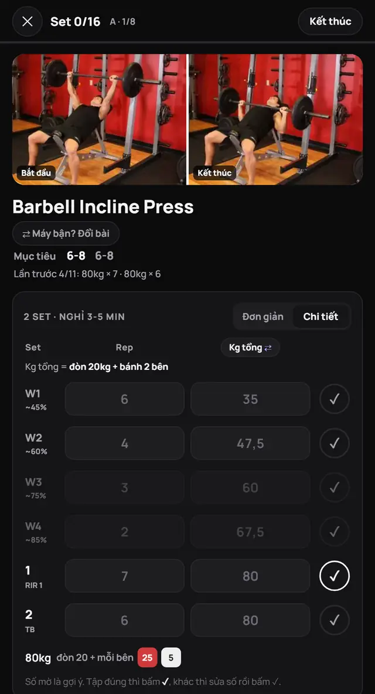
Thanh trên cùng: Set đã xong / tổng set cả buổi, vị trí bài (A · 1/8) và nút Kết thúc.
Hai kiểu nhập set
| Kiểu | Dùng khi |
|---|---|
| Đơn giản | Chỉ cần tick set đã tập, không ghi số. Nhanh nhất. |
| Chi tiết | Ghi rep + kg từng set. Mở khoá gợi ý tạ, báo kỷ lục, bảng tạ, biểu đồ tiến bộ, huy hiệu sức mạnh. |
Đổi kiểu bằng nút Đơn giản | Chi tiết ngay trên bảng set, hoặc trong cài đặt. Lựa chọn được lưu theo tài khoản.
Ghi một set (Chi tiết)
- Số mờ là gợi ý lấy từ buổi trước. Tập đúng như vậy: bấm ✓ là xong.
- Khác gợi ý: gõ số mới vào ô rep / kg rồi bấm ✓.
- Buổi trước đạt mức rep trên của mục tiêu thì có chữ → tăng tạ và gợi ý kg tự cộng thêm 1 bước (2,5kg tạ đòn, 1kg tạ đơn).
- Bài chưa tập bao giờ: app gợi ý mức tạ khởi đầu từ bài tương tự bạn đã tập.
- Hàng W1, W2… là set khởi động theo % tạ làm việc. Hàng mờ là tuỳ chọn.
Không hiểu chữ nào? Chạm vào nó
Chạm RIR 1, TB, W1, chữ Mục tiêu, nhãn Superset… hoặc nút ⓘ Thuật ngữ dưới bảng set để xem giải thích ngắn.
Lỗi thường gặp & nhóm cơ
Kéo xuống dưới video: mục Lỗi thường gặp (3 điểm cần nhớ của kiểu bài đó) và hình Nhóm cơ (tím đậm = cơ chính, tím nhạt = cơ phụ).
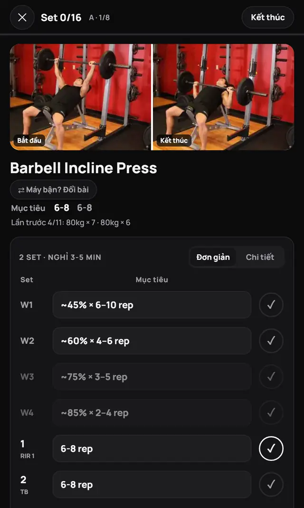
Kiểu Đơn giản
Mỗi set chỉ có mục tiêu (ví dụ 6-8 rep) và nút ✓. Tập xong set nào bấm set đó, app tự đếm giờ nghỉ. Hợp khi không muốn ghi số, nhưng sẽ không có kỷ lục và gợi ý tạ.
Bên dưới bảng set: video hướng dẫn, các bước thực hiện và bài thay thế. Nút Xong bài / Tiếp › ở đáy để chuyển bài.
5Nghỉ giữa set
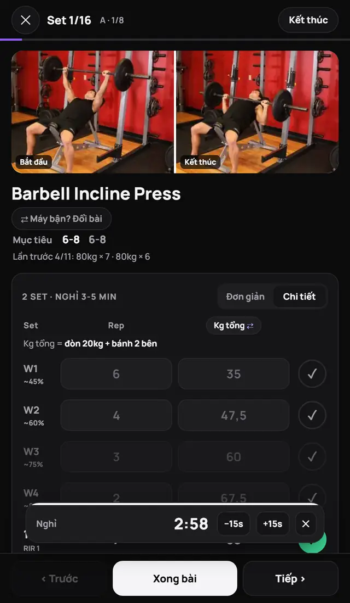
- Bấm ✓ một set là thanh Nghỉ hiện ở đáy và đếm ngược, đi theo mọi màn hình.
- Thời gian nghỉ theo từng bài: chương trình có ghi sẵn (ví dụ 3-5 phút) thì theo chương trình, không thì tự tính: bài compound 3 phút, cô lập 90 giây, bụng/bắp chân 60 giây. Set khởi động nghỉ 60 giây.
- Muốn đổi: chọn mức ở dòng Nghỉ bài này dưới bảng set. App nhớ riêng cho bài đó; bấm ↺ Tự động để về mặc định.
- Set tính giờ (plank, treo xà…): bấm ▶ Bắt đầu 90 giây để đếm ngược, hết giờ có tiếng bíp và tự tick set.
- −15s / +15s chỉnh nhanh, ✕ bỏ nghỉ.
- Hết giờ: có tiếng bíp và chữ Vào set.
6Ghi kg cho đúng
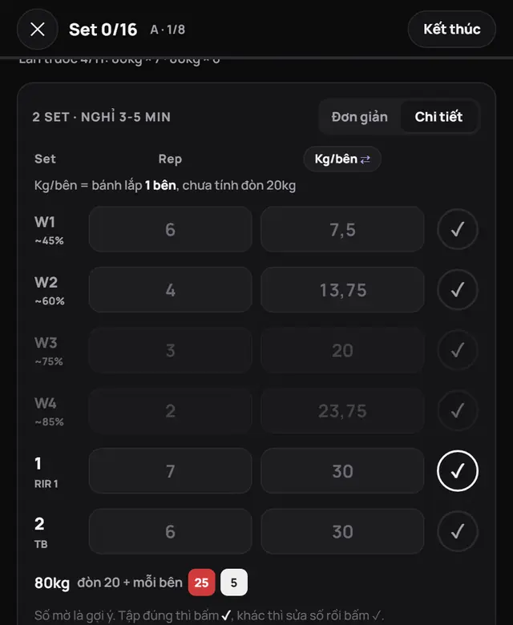
Dưới đầu bảng set luôn có một dòng nhỏ nói ô kg hiểu thế nào:
| Loại bài | Nhập vào ô kg |
|---|---|
| Tạ đòn · Kg tổng | Cả đòn 20kg + bánh 2 bên |
| Tạ đòn · Kg/bên | Bánh lắp 1 bên (app tự cộng ×2 + đòn) |
| Tạ đơn · Kg/tay | Kg của 1 quả tạ |
| Smith | Bánh 2 bên, không tính đòn máy |
| Máy / cáp | Số trên máy / cục tạ |
| Thân người · +Kg | Kg đeo thêm, 0 nếu không đeo |
- Bài tạ đòn: bấm Kg tổng ⇄ ở đầu cột để đổi sang Kg/bên (và ngược lại). Lựa chọn được nhớ cho mọi bài tạ đòn.
- Bảng tạ dưới bảng set: 80kg · đòn 20 + mỗi bên 25 5: lắp bánh nào mỗi bên.
- App luôn lưu tổng kg, nên đổi cách nhập không ảnh hưởng kỷ lục hay huy hiệu.
7Máy bận? Đổi bài
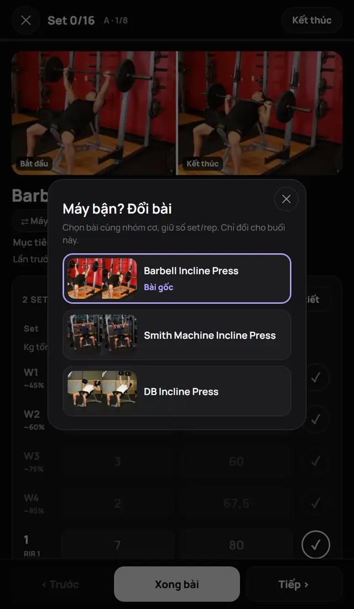
- Bấm ⇄ Máy bận? Đổi bài dưới tên bài, chọn bài khác cùng nhóm cơ. Số set/rep giữ nguyên.
- Chỉ đổi cho buổi này, lần sau vẫn là bài gốc. Trang Hôm nay ghi ⇄ Đổi từ ….
- Muốn đổi lại: bấm nút đó lần nữa → chọn Bài gốc.
- Hoặc kéo xuống Bài thay thế, xem video bài đó rồi bấm Dùng bài này cho buổi hôm nay.
- Lịch sử, kỷ lục và gợi ý tạ tính theo bài bạn thật sự tập.
8Kết thúc buổi
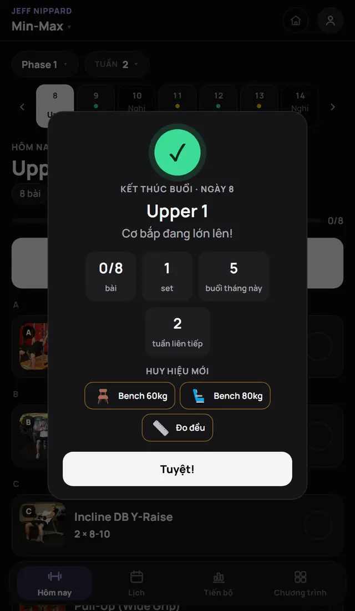
- Xong hết bài, hoặc bấm Kết thúc giữa chừng: bắn pháo giấy và hiện tổng kết (bài, set, số phút, buổi trong tháng, tuần liên tiếp).
- Huy hiệu vừa mở khoá hiện ngay trong bảng tổng kết.
- Thời gian buổi tính từ set ✓ đầu tiên đến lúc Kết thúc (30 phút không tick gì thì tự dừng).
9Lịch
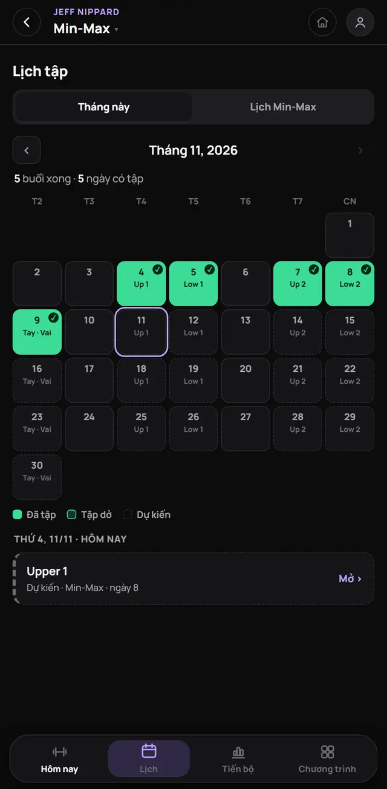
- Tháng này: mỗi ô là 1 ngày. Xanh đặc = đã tập (✓ góc phải), viền xanh = tập dở, viền đứt = dự kiến theo lịch.
- Bấm vào ngày để xem buổi đã tập, bấm Mở › để vào buổi đó.
- Tab Lịch <chương trình>: toàn bộ lịch của chương trình theo tuần.
10Tiến bộ
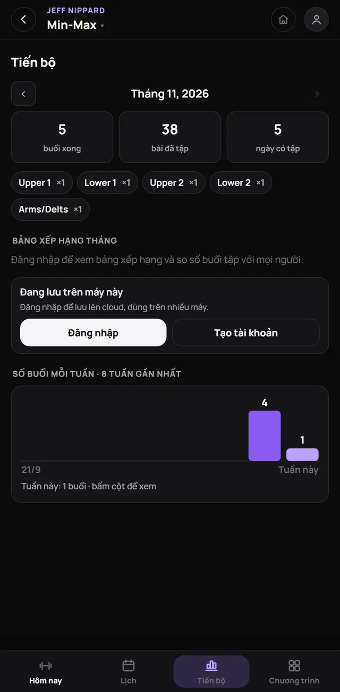
- Thống kê tháng: số buổi xong, số bài, số ngày có tập. Bấm ‹ › để xem tháng khác.
- Bảng xếp hạng tháng: số buổi xong của mọi người và chương trình họ tập (cần đăng nhập).
- Số buổi mỗi tuần trong 8 tuần gần nhất. Bấm cột để xem số.
- Nhóm cơ · 7 ngày qua: hình người tô màu theo số set mỗi nhóm cơ (cơ chính 1 set, cơ phụ 0,5), kèm nhãn thiếu (dưới 6 set) hoặc nhiều (trên 20 set). Nên 10–20 set mỗi nhóm cơ lớn mỗi tuần.
- Tổng kết tuần trước: số buổi, set, tấn, kỷ lục, cân nặng thay đổi, nhóm cơ nhiều nhất và còn thiếu. Đầu mỗi tuần thẻ này cũng hiện ở trang Hôm nay, bấm ✕ để ẩn.
- Trong từng bài (kiểu Chi tiết) có biểu đồ Tiến bộ tạ nặng nhất mỗi buổi.
11Chỉ số cơ thể & huy hiệu
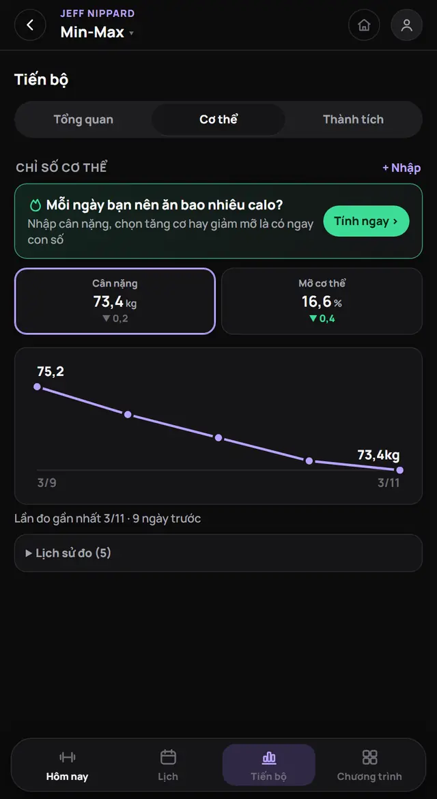
Chỉ số cơ thể
- Bấm + Nhập: chọn ngày đo, nhập cân nặng và/hoặc mỡ cơ thể. Mỡ nhập theo % hoặc kg (kg tự đổi ra %).
- Ô chỉ số có ▲▼ so với lần trước (xanh = tốt). Bấm ô để đổi biểu đồ.
- Quá 14 ngày chưa đo sẽ nhắc đến lúc đo lại. Lịch sử đo: bấm để sửa hoặc xoá.
Huy hiệu
- 35 huy hiệu: số buổi, tuần liên tiếp, tháng chăm, kỷ lục, sức mạnh (Bench / Squat / Deadlift), tổng khối lượng (tấn), cơ thể, chim sớm / cú đêm…
- Sắp đạt: 3 huy hiệu gần nhất, kèm "còn 20 kg", "còn 2 tuần"…
- Huy hiệu sức mạnh và khối lượng cần ghi kg (kiểu Chi tiết).
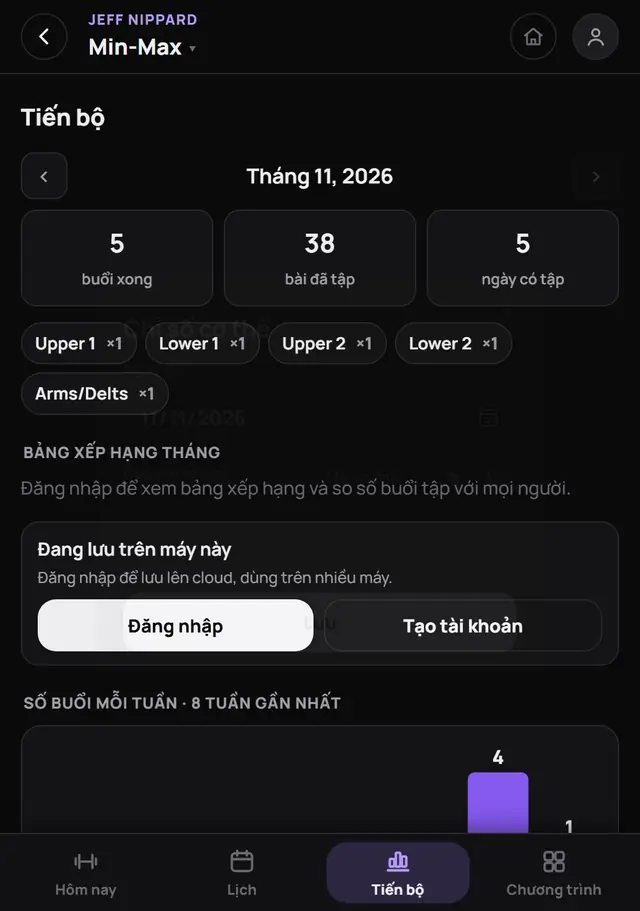
12Tài khoản & cài đặt
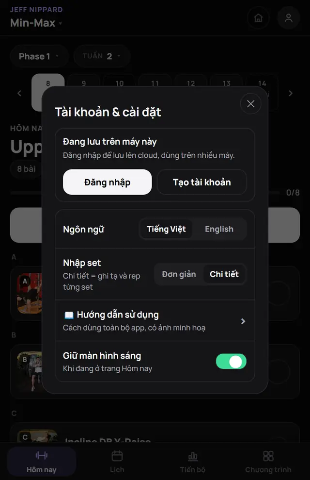
- Đăng nhập / Tạo tài khoản (chỉ cần tên + mật khẩu): dữ liệu được đồng bộ lên cloud, dùng nhiều máy, và vào được bảng xếp hạng. Nhớ kỹ mật khẩu, hiện chưa có lấy lại mật khẩu.
- Chấm nhỏ trên avatar: xanh = đã đồng bộ, vàng = đang chờ, đỏ = lỗi. Nút ⟳ để đồng bộ ngay.
- Ngôn ngữ: Tiếng Việt / English.
- Nhập set: Đơn giản / Chi tiết.
- 📖 Hướng dẫn sử dụng: mở trang này.
- Giữ màn hình sáng khi ở trang Hôm nay.
13Hỏi nhanh
Không thấy gợi ý tạ, bảng tạ, kỷ lục?
Chuyển sang kiểu Chi tiết. Bảng tạ chỉ có ở bài tạ đòn. Gợi ý tạ khởi đầu cần một bài tương tự đã ghi kg.
Lỡ ghi kg 1 bên vào ô tổng?
Bấm Kg tổng ⇄ để đổi sang Kg/bên, gõ lại số rồi bấm ra ngoài ô: app lưu lại đúng tổng.
Bấm nhầm ✓?
Bấm lại ✓ của set đó để bỏ tick.
Dữ liệu lưu ở đâu?
Trên máy (trình duyệt). Nếu đăng nhập thì có thêm bản trên cloud và tự đồng bộ khi mở app.
Đổi máy mới?
Đăng nhập cùng tài khoản trên máy mới là dữ liệu tự về.